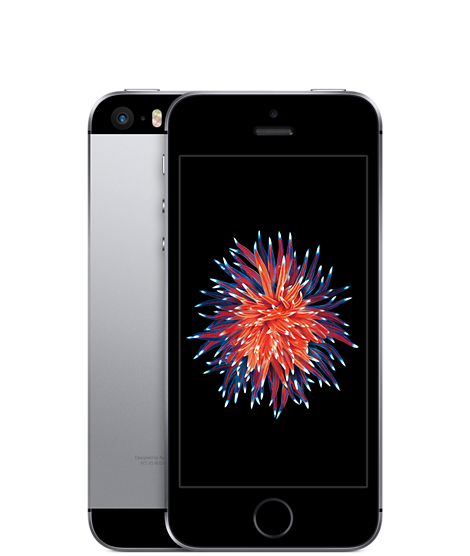
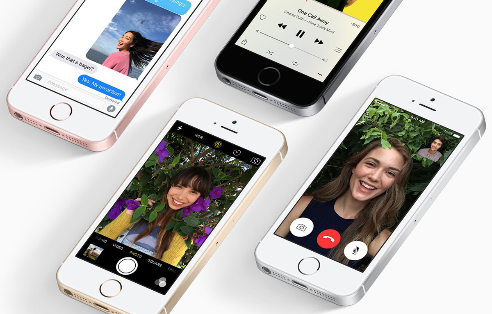

Apple iPhone SE
- 4-inch Retina screen
- 12MP Camera
- 3D-Touch
- iOS 9
- €499
Embedded directly into the A9 chip, the M9 motion coprocessor connects to the accelerometer, compass, and gyroscope for a range of fitness tracking capabilities, such as measuring your steps and distance. It also makes it easy to activate Siri by simply saying “Hey Siri,” without having to pick up your iPhone.
At the core of iPhone SE is the A9, the same advanced chip that’s in iPhone 6s. With 64‑bit desktop-class architecture, the A9 chip brings you spectacular speed and responsiveness. And with console-class graphics performance, your favorite games and apps are incredibly rich and immersive. Making it a mighty chip for maximum performance
The world’s most popular camera is more advanced than ever. The 12-megapixel iSight camera captures sharp, detailed photos. It takes brilliant 4K video, up to four times the resolution of 1080p HD video. iPhone SE also takes selfies worthy of a self-portrait with the new 5-megapixel FaceTime HD camera. And it introduces Live Photos, a new way to relive your favourite memories. It captures the moments just before and after your picture and sets it in motion with just the press of a finger.
Browse the web, download apps and games, and stream video over 802.11ac Wi-Fi and LTE — with speeds even faster than on iPhone 5s. And more LTE bands make iPhone SE better for worldwide roaming. iPhone SE also supports Voice over LTE and Wi-Fi calling for high-quality wideband calls.2 And with Bluetooth technology, you can stay connected to your Apple Watch, external speakers, and other devices
Audio formats supported: AAC (8 to 320 Kbps), Protected AAC (from iTunes Store), HE-AAC, MP3 (8 to 320 Kbps), MP3 VBR, Audible (formats 2, 3, 4, Audible Enhanced Audio, AAX, and AAX+), Apple Lossless, AIFF, and WAV User-configurable maximum volume limit
Assisted GPS and GLONASS.Digital compass.Wi-Fi.Cellular.Embedded directly into the A9 chip, the M9 motion coprocessor connects to the accelerometer, compass, and gyroscope for a range of fitness tracking capabilities, such as measuring your steps and distance. It also makes it easy to activate Siri by simply saying “Hey Siri,” without having to pick up your iPhone.
Touch ID, Barometer, three-axis gyro, accelerometer, proximity sensor, ambient light sensor embedded directly into the A9 chip, the M9 motion coprocessor connects to the accelerometer, compass, and gyroscope for a range of fitness tracking capabilities, such as measuring your steps and distance. It also makes it easy to activate Siri by simply saying “Hey Siri,” without having to pick up your iPhone.
Source: Apple